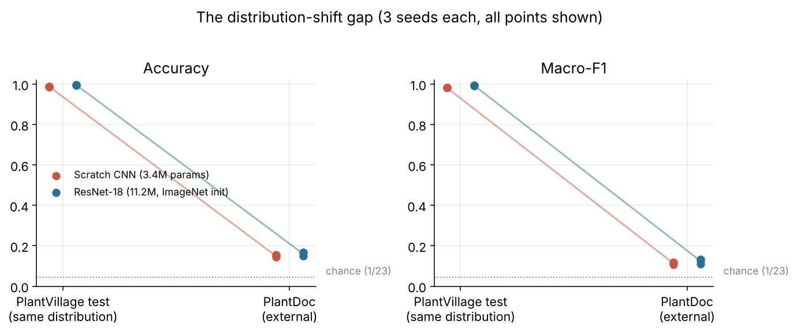
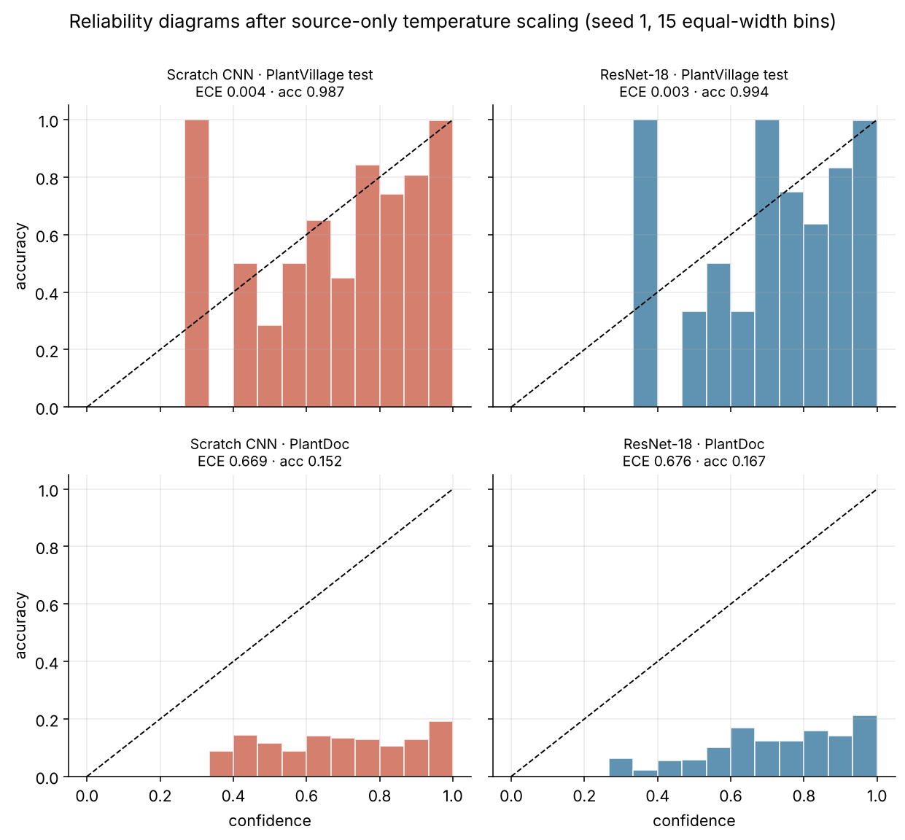

<title>Plant Reliability Explorer</title>
<style>
:root{--bg:#f6f5ef;--fg:#1d2a22;--mut:#5f6b62;--card:#fffefa;--line:#dcdacc;--acc:#2f6b3f;--bad:#b4472f;--ok:#2f6b3f}
@media (prefers-color-scheme:dark){:root:not([data-theme="light"]){--bg:#121a15;--fg:#e8ede6;--mut:#9aa89d;--card:#1a251e;--line:#2e3d33;--acc:#7fc48f;--bad:#e8856c;--ok:#7fc48f;color-scheme:dark}}
:root[data-theme="dark"]{--bg:#121a15;--fg:#e8ede6;--mut:#9aa89d;--card:#1a251e;--line:#2e3d33;--acc:#7fc48f;--bad:#e8856c;--ok:#7fc48f;color-scheme:dark}
body{background:var(--bg);color:var(--fg);font:16px/1.55 Georgia,'Times New Roman',serif;padding-inline:16px;padding-block:24px}
main{max-width:860px;margin:0 auto;display:grid;gap:22px}
h1{font-size:1.9rem;line-height:1.2;margin:0;text-wrap:balance}h2{font-size:1.15rem;margin:0 0 8px}
p{margin:0}.mut{color:var(--mut);font-size:.92rem}
.sans,button,select,label,table{font-family:system-ui,-apple-system,Segoe UI,sans-serif}
.card{background:var(--card);border:1px solid var(--line);border-radius:10px;padding:16px;min-width:0}
.kpis{display:grid;grid-template-columns:repeat(auto-fit,minmax(150px,1fr));gap:12px}
.kpi b{display:block;font-size:1.8rem;font-variant-numeric:tabular-nums}.kpi span{font-size:.8rem;color:var(--mut);text-transform:uppercase;letter-spacing:.06em}
.bad{color:var(--bad)}.ok{color:var(--ok)}
.ctl{display:flex;flex-wrap:wrap;gap:12px;align-items:center}
select,input[type=range]{font-size:1rem}input[type=range]{flex:1;min-width:160px;accent-color:var(--acc)}
svg{width:100%;height:auto;display:block}svg text{fill:var(--mut);font:11px system-ui,sans-serif}
.tw{overflow-x:auto}table{border-collapse:collapse;width:100%;font-size:.88rem;font-variant-numeric:tabular-nums}
th,td{padding:6px 8px;border-bottom:1px solid var(--line);text-align:right;white-space:nowrap}th:first-child,td:first-child{text-align:left}

h2.step{display:flex;gap:10px;align-items:baseline;font-size:1.3rem;margin:0 0 10px}h2.step i{font:700 .8rem system-ui,sans-serif;color:var(--bg);background:var(--acc);border-radius:99px;padding:2px 9px;font-style:normal}
section.s{display:grid;gap:12px;min-width:0}ul{margin:0;padding-left:1.2rem;display:grid;gap:4px}
.fig{border:1px solid var(--line);border-radius:8px;background:#fff;padding:4px}.fig img{display:block;width:100%;height:auto}
.two{display:grid;grid-template-columns:repeat(auto-fit,minmax(260px,1fr));gap:12px}
code{font-size:.88em;background:var(--card);border:1px solid var(--line);border-radius:4px;padding:0 4px}
a{color:var(--acc)}
</style>
<main>
<header><p class="mut sans" style="text-transform:uppercase;letter-spacing:.08em">Project 2 · Machine learning reliability study</p>
<h1>Plant Disease Classifier Reliability Study</h1>
<p style="margin-top:8px">Plant-disease classifiers report about 99% accuracy on the PlantVillage benchmark. This project asks what happens when the same models see field-style photos, and whether their confidence can be trusted enough to say “I don't know”.</p>
<p class="mut sans" style="margin-top:8px"><a href="https://github.com/kanishk2705/plant-disease-reliability">Code and protocol on GitHub</a> · read top to bottom: problem → design → implementation → results → next steps</p></header>

<section class="s card"><h2 class="step"><i>1</i> The problem</h2>
<p>PlantVillage photos are leaves on plain backgrounds under controlled light. A farmer's phone photo has soil, hands, shadows and other leaves in frame. A model that scores 99% on the first may fail on the second, and a wrong answer given with high confidence is worse than no answer. Two things were measured: how much accuracy is lost, and whether the model's confidence warns us when it is wrong.</p>
<p class="mut">Questions fixed in advance: how large is the accuracy gap; does ImageNet pre-training (ResNet-18) generalise better than a small CNN trained from scratch; is confidence calibrated on field images, and does temperature scaling fitted on source data fix it; can a confidence threshold chosen on source data safely reject bad predictions.</p></section>

<section class="s card"><h2 class="step"><i>2</i> Design: how the study was made trustworthy</h2>
<ul>
<li><b>Pre-registered protocol.</b> Hypotheses, metrics and decision rules were written and committed before any field data was used.</li>
<li><b>Leakage-proof splits.</b> PlantVillage has many photos of the same leaf. Splits are grouped by leaf (70 / 7.5 / 7.5 / 15 for train, selection, calibration, test), with zero group or hash overlap across splits and with the external set.</li>
<li><b>External data touched once.</b> PlantDoc (1,993 images, 23 shared classes) was never used for training, tuning, calibration or thresholds. Each run's temperature, thresholds and checkpoint hash were frozen in git before it saw PlantDoc, and the evaluator refuses to run if verification fails.</li>
<li><b>Two models, three seeds each,</b> reported individually, with 10,000-resample cluster-bootstrap confidence intervals.</li>
</ul></section>

<section class="s card"><h2 class="step"><i>3</i> Implementation</h2>
<div class="two"><div><p><b>Models.</b> A 3.4M-parameter CNN trained from scratch, and ImageNet-pretrained ResNet-18 (11.2M) with a 23-class head. AdamW, mixed precision, checkpoint chosen by lowest validation loss, learning rate picked from 3 values per model on selection data only.</p></div>
<div><p><b>Reliability tooling.</b> One temperature per run fitted on the calibration split; two abstention rules from the same split (keep 90% coverage; cap risk at 1%). Metrics: accuracy, macro-F1, ECE, Brier, NLL, AURC, AUROC for error detection.</p></div></div>
<p class="mut">PyTorch on a Colab T4, about 17 minutes per run, 229 automated tests, data verified against SHA-256 manifests (35,410 files). Everything reproduces from the README.</p></section>

<section class="s"><h2 class="step"><i>4</i> Results</h2>
<div class="card"><p><b>Finding 1: accuracy collapses.</b> About 99% on PlantVillage becomes 14–17% on PlantDoc (chance is 4.3%), a gap of roughly 83 percentage points with 95% intervals of about 81–86.</p>
<div class="fig" style="margin-top:10px"></div></div>
<div class="card"><p><b>Finding 2: the pretrained model is not clearly better.</b> ResNet-18 is higher in every seed (macro-F1 +0.004 to +0.019), but the paired interval excludes zero in only one seed, so the pre-set rule says: not demonstrated.</p></div>
<div class="card"><p><b>Finding 3: confidence is badly overconfident, and temperature scaling did not help.</b> Mean confidence exceeds accuracy by 0.65–0.74 on PlantDoc, against 0.003–0.005 on PlantVillage. Scaling fitted on source data slightly raised external error, because it sharpened outputs (T below 1). The problem is the shift itself, not a temperature setting.</p>
<div class="fig" style="margin-top:10px"></div></div>
<div class="card"><p><b>Finding 4: thresholds chosen on source data do not transfer.</b> Confidence separates right from wrong far less well on PlantDoc (AUROC 0.59–0.63, against 0.97–0.99 on source). Explore it below.</p></div>
</section>

<section class="s card"><h2 class="step"><i>5</i> Explore the numbers</h2>
<div class="ctl sans"><label>Model <select id="m"><option value="cnn">Scratch CNN</option><option value="resnet18">ResNet-18</option></select></label>
<label>Seed <select id="s"><option>1</option><option>2</option><option>3</option></select></label></div>
<div class="kpis sans" id="kpis"></div>
<h2 style="margin-top:8px">Abstention: keep only the most confident images</h2>
<p class="mut">Drag the slider. Risk is the share of kept answers that are wrong. Full curve stored for seed 1.</p>
<div class="ctl sans"><label for="cv">Coverage</label><input id="cv" type="range" min="2" max="100" value="100"><b id="cvo"></b></div>
<div id="rcout" class="sans"></div><svg id="rc" viewBox="0 0 400 220" role="img" aria-label="Risk-coverage curve"></svg>
<h2 style="margin-top:8px">Reliability diagram (seed 1, PlantDoc)</h2>
<p class="mut">Honest confidence would put the bars on the dashed diagonal.</p><svg id="rel" viewBox="0 0 400 260" role="img" aria-label="Reliability diagram"></svg>
<div class="tw"><table id="tb"></table></div></section>

<section class="s card"><h2 class="step"><i>6</i> What this means</h2>
<p>Benchmark accuracy says almost nothing about field performance, and confidence from a source-trained model cannot be used as a safety signal on new image types without checking it on data from the target setting. Any deployment would need calibration and thresholds set on target-domain data, which this study deliberately did not do.</p></section>

<section class="s card"><h2 class="step"><i>7</i> Limitations</h2>
<ul><li>One dataset pair and one split seed; nothing shows this holds for other crops or architectures.</li>
<li>The PlantVillage→PlantDoc class mapping is provisional (no pathologist sign-off), and PlantDoc labels are web-scraped and noisy, so part of the error is label and domain noise.</li>
<li>Small hyperparameter grids; both models got the same budget on source data only.</li>
<li>The PlantVillage licence could not be confirmed; datasets and weights are not redistributed.</li>
<li>A code fix (JSON serialisation) was made after the freeze and before any metric was seen, with identical temperatures, thresholds and checkpoints; it is logged openly in the project record.</li>
<li>No live model demo is deployed; this page is static.</li></ul></section>

<section class="s card"><h2 class="step"><i>8</i> Next steps</h2>
<ul><li>Have a plant pathologist validate the class mapping.</li>
<li>Test target-domain calibration with a small labelled field sample, kept separate from the evaluation set.</li>
<li>Try domain-robust training (stronger augmentation, background removal) and more architectures and datasets.</li>
<li>Add a small Streamlit demo and a walkthrough video.</li></ul>
<p class="mut">Not an agricultural advice tool; do not use it to decide treatment.</p></section>
</main>
<script>
const D={"cnn": {"1": {"T": 0.7097, "lr": 0.0005, "src": {"accuracy": 0.9873, "macro_f1": 0.9815, "ece15_width": 0.0045, "auroc_error": 0.9829}, "ext": {"accuracy": 0.1525, "macro_f1": 0.1181, "ece15_width": 0.6689, "auroc_error": 0.5925}, "ext_uncal_ece": 0.5963, "ci": {"point": 0.1525, "lo": 0.137, "hi": 0.1686, "n_undefined": 0, "n_clusters": 1993}, "sel": {"r_cov": {"tau": 0.9963, "coverage": 0.1882, "risk": 0.7787, "n_accepted": 375, "n_rejected": 1618, "n_errors_accepted": 292}, "r_risk": {"tau": 0.3995, "coverage": 0.9719, "risk": 0.8451, "n_accepted": 1937, "n_rejected": 56, "n_errors_accepted": 1637}}, "rc": {"coverage": [0.001, 0.0176, 0.0346, 0.0517, 0.0682, 0.0853, 0.1024, 0.1194, 0.136, 0.153, 0.1701, 0.1872, 0.2037, 0.2208, 0.2378, 0.2549, 0.2715, 0.2885, 0.3056, 0.3226, 0.3392, 0.3562, 0.3733, 0.3904, 0.4069, 0.424, 0.441, 0.4581, 0.4747, 0.4917, 0.5088, 0.5258, 0.5424, 0.5595, 0.5765, 0.5936, 0.6101, 0.6272, 0.6443, 0.6613, 0.6779, 0.6949, 0.712, 0.7291, 0.7456, 0.7627, 0.7797, 0.7968, 0.8133, 0.8304, 0.8475, 0.8645, 0.8811, 0.8981, 0.9152, 0.9323, 0.9488, 0.9659, 0.9829, 1.0], "risk": [0.0, 0.5429, 0.6232, 0.6893, 0.7206, 0.7176, 0.7206, 0.7269, 0.7454, 0.7607, 0.764, 0.7775, 0.7857, 0.7909, 0.7848, 0.7894, 0.7837, 0.7913, 0.7947, 0.7947, 0.7929, 0.7901, 0.793, 0.7982, 0.799, 0.8, 0.8043, 0.8094, 0.8118, 0.8122, 0.8146, 0.8149, 0.8159, 0.8197, 0.8207, 0.8216, 0.8248, 0.828, 0.8287, 0.8278, 0.8312, 0.8325, 0.8365, 0.8362, 0.8358, 0.8349, 0.8359, 0.8363, 0.8365, 0.8393, 0.839, 0.8398, 0.8423, 0.8436, 0.8454, 0.8445, 0.8445, 0.8457, 0.8453, 0.8475]}, "rel": [{"count": 0, "mean_confidence": null, "accuracy": null}, {"count": 0, "mean_confidence": null, "accuracy": null}, {"count": 0, "mean_confidence": null, "accuracy": null}, {"count": 3, "mean_confidence": 0.2565, "accuracy": 0.0}, {"count": 8, "mean_confidence": 0.3133, "accuracy": 0.0}, {"count": 45, "mean_confidence": 0.3701, "accuracy": 0.0889}, {"count": 69, "mean_confidence": 0.4334, "accuracy": 0.1449}, {"count": 111, "mean_confidence": 0.5024, "accuracy": 0.1171}, {"count": 134, "mean_confidence": 0.5668, "accuracy": 0.0896}, {"count": 106, "mean_confidence": 0.6342, "accuracy": 0.1415}, {"count": 135, "mean_confidence": 0.7027, "accuracy": 0.1333}, {"count": 132, "mean_confidence": 0.7687, "accuracy": 0.1288}, {"count": 141, "mean_confidence": 0.8349, "accuracy": 0.1064}, {"count": 219, "mean_confidence": 0.9032, "accuracy": 0.1279}, {"count": 890, "mean_confidence": 0.9849, "accuracy": 0.1933}]}, "2": {"T": 0.7407, "lr": 0.0005, "src": {"accuracy": 0.9875, "macro_f1": 0.9834, "ece15_width": 0.0037, "auroc_error": 0.9875}, "ext": {"accuracy": 0.1545, "macro_f1": 0.1151, "ece15_width": 0.6488, "auroc_error": 0.6135}, "ext_uncal_ece": 0.5819, "ci": {"point": 0.1545, "lo": 0.139, "hi": 0.1701, "n_undefined": 0, "n_clusters": 1993}, "sel": {"r_cov": {"tau": 0.996, "coverage": 0.1786, "risk": 0.7275, "n_accepted": 356, "n_rejected": 1637, "n_errors_accepted": 259}, "r_risk": {"tau": 0.5128, "coverage": 0.8856, "risk": 0.8368, "n_accepted": 1765, "n_rejected": 228, "n_errors_accepted": 1477}}, "rc": null, "rel": null}, "3": {"T": 0.6547, "lr": 0.0005, "src": {"accuracy": 0.9865, "macro_f1": 0.9819, "ece15_width": 0.0054, "auroc_error": 0.9849}, "ext": {"accuracy": 0.1435, "macro_f1": 0.1072, "ece15_width": 0.6962, "auroc_error": 0.6048}, "ext_uncal_ece": 0.6097, "ci": {"point": 0.1435, "lo": 0.1279, "hi": 0.1591, "n_undefined": 0, "n_clusters": 1993}, "sel": {"r_cov": {"tau": 0.9978, "coverage": 0.1811, "risk": 0.7645, "n_accepted": 361, "n_rejected": 1632, "n_errors_accepted": 276}, "r_risk": {"tau": 0.3589, "coverage": 0.99, "risk": 0.8571, "n_accepted": 1973, "n_rejected": 20, "n_errors_accepted": 1691}}, "rc": null, "rel": null}}, "resnet18": {"1": {"T": 0.8448, "lr": 0.001, "src": {"accuracy": 0.9942, "macro_f1": 0.9915, "ece15_width": 0.003, "auroc_error": 0.9648}, "ext": {"accuracy": 0.1671, "macro_f1": 0.1282, "ece15_width": 0.6762, "auroc_error": 0.6261}, "ext_uncal_ece": 0.6459, "ci": {"point": 0.1671, "lo": 0.1505, "hi": 0.1831, "n_undefined": 0, "n_clusters": 1993}, "sel": {"r_cov": {"tau": 0.9999, "coverage": 0.0833, "risk": 0.6687, "n_accepted": 166, "n_rejected": 1827, "n_errors_accepted": 111}, "r_risk": {"tau": 0.5153, "coverage": 0.9087, "risk": 0.8211, "n_accepted": 1811, "n_rejected": 182, "n_errors_accepted": 1487}}, "rc": {"coverage": [0.0005, 0.0171, 0.0341, 0.0512, 0.0682, 0.0848, 0.1019, 0.1189, 0.136, 0.1525, 0.1696, 0.1867, 0.2037, 0.2203, 0.2373, 0.2544, 0.2715, 0.288, 0.3051, 0.3221, 0.3392, 0.3562, 0.3728, 0.3899, 0.4069, 0.424, 0.4405, 0.4576, 0.4747, 0.4917, 0.5083, 0.5253, 0.5424, 0.5595, 0.576, 0.5931, 0.6101, 0.6272, 0.6438, 0.6608, 0.6779, 0.6949, 0.712, 0.7285, 0.7456, 0.7627, 0.7797, 0.7963, 0.8133, 0.8304, 0.8475, 0.864, 0.8811, 0.8981, 0.9152, 0.9318, 0.9488, 0.9659, 0.9829, 1.0], "risk": [0.0, 0.3235, 0.5735, 0.6275, 0.6544, 0.6686, 0.6749, 0.7004, 0.7196, 0.7336, 0.7456, 0.7392, 0.734, 0.7358, 0.7463, 0.7554, 0.7616, 0.7613, 0.7615, 0.7632, 0.7648, 0.769, 0.7725, 0.7761, 0.7781, 0.774, 0.7768, 0.7774, 0.7801, 0.7847, 0.7868, 0.7889, 0.7909, 0.7928, 0.7962, 0.7986, 0.7985, 0.7976, 0.8005, 0.8018, 0.8024, 0.8029, 0.8055, 0.8079, 0.8089, 0.8099, 0.8121, 0.8135, 0.8149, 0.8145, 0.8153, 0.8148, 0.8172, 0.8196, 0.8224, 0.8244, 0.8265, 0.8286, 0.8305, 0.8329]}, "rel": [{"count": 0, "mean_confidence": null, "accuracy": null}, {"count": 0, "mean_confidence": null, "accuracy": null}, {"count": 0, "mean_confidence": null, "accuracy": null}, {"count": 1, "mean_confidence": 0.2151, "accuracy": 0.0}, {"count": 16, "mean_confidence": 0.306, "accuracy": 0.0625}, {"count": 44, "mean_confidence": 0.3716, "accuracy": 0.0227}, {"count": 55, "mean_confidence": 0.4314, "accuracy": 0.0545}, {"count": 87, "mean_confidence": 0.5033, "accuracy": 0.0575}, {"count": 108, "mean_confidence": 0.5648, "accuracy": 0.1019}, {"count": 95, "mean_confidence": 0.6364, "accuracy": 0.1684}, {"count": 97, "mean_confidence": 0.7017, "accuracy": 0.1237}, {"count": 136, "mean_confidence": 0.77, "accuracy": 0.125}, {"count": 132, "mean_confidence": 0.8373, "accuracy": 0.1591}, {"count": 217, "mean_confidence": 0.9034, "accuracy": 0.1429}, {"count": 1005, "mean_confidence": 0.986, "accuracy": 0.2139}]}, "2": {"T": 0.4846, "lr": 0.001, "src": {"accuracy": 0.9958, "macro_f1": 0.9949, "ece15_width": 0.0028, "auroc_error": 0.9698}, "ext": {"accuracy": 0.1666, "macro_f1": 0.1339, "ece15_width": 0.7442, "auroc_error": 0.6106}, "ext_uncal_ece": 0.6454, "ci": {"point": 0.1666, "lo": 0.15, "hi": 0.1831, "n_undefined": 0, "n_clusters": 1993}, "sel": {"r_cov": {"tau": 1.0, "coverage": 0.0793, "risk": 0.6329, "n_accepted": 158, "n_rejected": 1835, "n_errors_accepted": 100}, "r_risk": {"tau": 0.6223, "coverage": 0.9137, "risk": 0.8298, "n_accepted": 1821, "n_rejected": 172, "n_errors_accepted": 1511}}, "rc": null, "rel": null}, "3": {"T": 0.6478, "lr": 0.001, "src": {"accuracy": 0.9954, "macro_f1": 0.9949, "ece15_width": 0.0042, "auroc_error": 0.9647}, "ext": {"accuracy": 0.149, "macro_f1": 0.1114, "ece15_width": 0.7341, "auroc_error": 0.6186}, "ext_uncal_ece": 0.6659, "ci": {"point": 0.149, "lo": 0.1335, "hi": 0.1651, "n_undefined": 0, "n_clusters": 1993}, "sel": {"r_cov": {"tau": 1.0, "coverage": 0.1059, "risk": 0.673, "n_accepted": 211, "n_rejected": 1782, "n_errors_accepted": 142}, "r_risk": {"tau": 0.509, "coverage": 0.9579, "risk": 0.8502, "n_accepted": 1909, "n_rejected": 84, "n_errors_accepted": 1623}}, "rc": null, "rel": null}}};const $=i=>document.getElementById(i);const f=(x,d=3)=>x==null?'–':x.toFixed(d);
const NS='http://www.w3.org/2000/svg';
function el(p,t,a,txt){const e=document.createElementNS(NS,t);for(const k in a)e.setAttribute(k,a[k]);if(txt)e.textContent=txt;p.appendChild(e);return e}
function cur(){return D[$('m').value][$('s').value]}
function kpis(){const d=cur();$('kpis').innerHTML=
 `<div class="card kpi"><span>PlantVillage accuracy</span><b class="ok">${f(d.src.accuracy)}</b></div>
 <div class="card kpi"><span>PlantDoc accuracy</span><b class="bad">${f(d.ext.accuracy)}</b><span>95% CI ${f(d.ci.lo)}–${f(d.ci.hi)}</span></div>
 <div class="card kpi"><span>PlantDoc ECE</span><b class="bad">${f(d.ext.ece15_width)}</b><span>source ${f(d.src.ece15_width,4)} · T=${f(d.T,2)}</span></div>
 <div class="card kpi"><span>Error-detection AUROC</span><b>${f(d.ext.auroc_error,2)}</b><span>source ${f(d.src.auroc_error,2)}</span></div>`}
function rc(){const d=cur(),svg=$('rc');svg.innerHTML='';const W=400,H=220,l=36,b=26,pw=W-l-8,ph=H-b-8;
 const X=c=>l+c*pw,Y=r=>8+(1-r)*ph;
 [0,.25,.5,.75,1].forEach(t=>{el(svg,'line',{x1:l,x2:W-8,y1:Y(t),y2:Y(t),stroke:'var(--line)'});el(svg,'text',{x:l-4,y:Y(t)+4,'text-anchor':'end'},t);el(svg,'text',{x:X(t),y:H-8,'text-anchor':'middle'},t)});
 el(svg,'text',{x:W/2,y:H,'text-anchor':'middle'},'coverage');
 if(!d.rc){$('rcout').textContent='Full curve stored for seed 1 only; operating points for all seeds are in the table below.';return}
 const pts=d.rc.coverage.map((c,i)=>[c,d.rc.risk[i]]);
 el(svg,'path',{d:'M'+pts.map(p=>X(p[0])+','+Y(p[1])).join('L'),fill:'none',stroke:'var(--acc)','stroke-width':2});
 const c=$('cv').value/100;let best=pts[0];for(const p of pts)if(Math.abs(p[0]-c)<Math.abs(best[0]-c))best=p;
 el(svg,'circle',{cx:X(best[0]),cy:Y(best[1]),r:5,fill:'var(--bad)'});
 $('cvo').textContent=Math.round(c*100)+'%';
 $('rcout').innerHTML=`Keeping <b>${Math.round(best[0]*100)}%</b> of images → <b class="${best[1]>.5?'bad':'ok'}">${Math.round(best[1]*100)}%</b> of kept answers are wrong.`}
function rel(){const d=D[$('m').value]['1'],svg=$('rel');svg.innerHTML='';const W=400,H=260,l=36,b=28,pw=W-l-8,ph=H-b-8;
 const X=c=>l+c*pw,Y=r=>8+(1-r)*ph;
 [0,.5,1].forEach(t=>{el(svg,'line',{x1:l,x2:W-8,y1:Y(t),y2:Y(t),stroke:'var(--line)'});el(svg,'text',{x:l-4,y:Y(t)+4,'text-anchor':'end'},t);el(svg,'text',{x:X(t),y:H-12,'text-anchor':'middle'},t)});
 el(svg,'line',{x1:X(0),y1:Y(0),x2:X(1),y2:Y(1),stroke:'var(--mut)','stroke-dasharray':'4 3'});
 d.rel.forEach((q,i)=>{if(!q.count)return;const x=X(i/15),w=pw/15-2;el(svg,'rect',{x:x+1,y:Y(q.accuracy),width:w,height:Math.max(0,Y(0)-Y(q.accuracy)),fill:'var(--bad)',opacity:.85})});
 el(svg,'text',{x:W/2,y:H-1,'text-anchor':'middle'},'confidence  (bars = actual accuracy in that bin)')}
function tb(){const m=$('m').value;let h='<tr><th>Seed</th><th>Source acc</th><th>PlantDoc acc</th><th>PlantDoc F1</th><th>ECE</th><th>T</th><th>Cov @90%-val rule</th><th>Risk</th></tr>';
 for(const s of ['1','2','3']){const d=D[m][s];h+=`<tr><td>${s}</td><td>${f(d.src.accuracy)}</td><td>${f(d.ext.accuracy)}</td><td>${f(d.ext.macro_f1)}</td><td>${f(d.ext.ece15_width)}</td><td>${f(d.T,2)}</td><td>${f(d.sel.r_cov.coverage,2)}</td><td>${f(d.sel.r_cov.risk,2)}</td></tr>`}
 $('tb').innerHTML=h}
function all(){kpis();rc();rel();tb()}
['m','s','cv'].forEach(i=>$(i).addEventListener('input',all));all();
</script>
